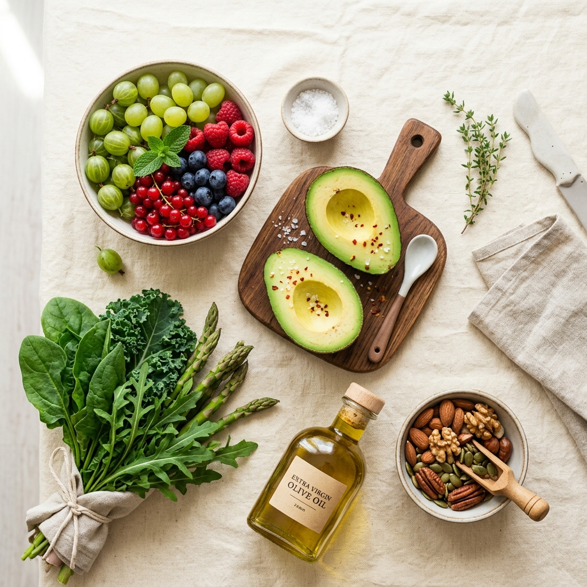

Nutrir tu cuerpo es el primer paso para sanar tu vida
Descubre una relación saludable y duradera con la comida a través de la nutrición funcional. Planes de alimentación creados a tu medida para optimizar tu salud, energía y rendimiento sin restricciones extremas.

Hola, soy Andrea Otañez Varela
Soy nutrióloga clínica egresada de la Universidad Autónoma de Baja California (UABC) y especialista en nutrición funcional. Mi misión es guiarte con rigor científico y profunda empatía hacia hábitos sostenibles, sanando tu relación con la comida.
Especialidades Nutricionales
Ofrezco planes personalizados diseñados científicamente para responder a tus necesidades biológicas, estilo de vida y metas personales.
Nutrición Clínica & Funcional
Tratamiento y prevención de condiciones como colitis, gastritis, diabetes, hipertensión, hipotiroidismo y desbalances hormonales mediante alimentación integradora.
- Menús antiinflamatorios
- Enfoque en salud digestiva
- Suplementación personalizada
Salud Digestiva & Microbiota
Tratamiento funcional para desbalances como colitis, gastritis, estreñimiento, SIBO y disbiosis intestinal para restaurar tu salud y bienestar desde el origen.
- Restauración de microbiota
- Protocolo SIBO y desinflamación
- Planes alimenticios digestivos
Nutrición Hormonal & Femenina
Acompañamiento nutricional en síndrome de ovario poliquístico (SOP), endometriosis, fertilidad, embarazo y etapa de lactancia.
- Regulación de ciclo menstrual
- Planes para fertilidad
- Alimentación prenatal segura
Calidad y Asesoría Alimentaria
Auditoría técnica, diseño de menús institucionales y control de higiene para comedores colectivos y empresas, asegurando los más altos estándares de inocuidad y balance nutricional.
- Auditoría bajo normas de higiene
- Diseño y balance de menús masivos
- Capacitación a personal de cocina
Calculadoras Interactivas
Una estimación rápida para comenzar. Recuerda que la composición corporal es mucho más que un simple número.
Conoce tu Índice de Masa Corporal
Ingresa tu peso y estatura a continuación para obtener una estimación rápida.
Ingresa tus datos a la izquierda para ver el análisis de tu composición corporal básica.
Gasto Energético Diario Estimado
Conoce aproximadamente cuántas calorías requiere tu cuerpo para mantener su peso actual según tu nivel de actividad diaria.
Completa los campos metabólicos para estimar tu tasa metabólica basal y necesidades energéticas.
Explorador de Recetas Saludables
Comer bien es delicioso. Disfruta de esta selección de platillos prácticos y llenos de nutrientes diseñados por mí.
Bowl de Avena con Frutos Rojos y Chía
Un desayuno lleno de fibra, antioxidantes y grasas saludables para iniciar el día con máxima energía.
Salmón Glaseado con Ensalada de Quinoa
Una comida rica en omega-3, proteínas magras y carbohidratos complejos para una óptima saciedad.
Muffins Fit de Plátano y Avena
El antojo dulce perfecto, libre de azúcares refinadas y lleno de sabor natural para tus tardes.
Testimonios de Pacientes
Historias reales de personas que transformaron su relación con la alimentación y recuperaron su vitalidad.
Da el primer paso hoy
Agenda tu sesión de valoración en línea o presencial. Comencemos a trazar el plan nutricional y de hábitos que cambiará tu vida.
Av. Universidad #1420, Consultorio 204. Tijuana, Baja California.
+52 (664) 123-4567
citas@nutriandrea.com
Programar Cita
Completa el formulario para reservar tu horario.
Preguntas Comunes
Encuentra respuestas rápidas a los cuestionamientos habituales sobre las consultas y mi metodología.
En la primera consulta, realizamos una historia clínica profunda. Evaluamos tus hábitos de alimentación actuales, tus niveles de energía, calidad de sueño, digestión, antecedentes familiares y análisis de laboratorio si los tienes. Con esto, definimos tus metas y creamos el primer plan adaptado a tu metabolismo y rutina diaria.
¡Sí, por supuesto! Ofrecemos videoconsultas a través de plataformas seguras como Zoom o Google Meet. El plan de alimentación, las recomendaciones de estilo de vida y el seguimiento se envían de forma inmediata en formato PDF premium a tu correo y WhatsApp.
De ninguna manera. Mi filosofía se basa en el consumo de comida real, local y accesible. Todos los menús se adaptan al presupuesto de cada paciente y se diseñan con ingredientes comunes que puedes encontrar en cualquier mercado o supermercado habitual.
No promuevo dietas restrictivas ni soluciones mágicas a corto plazo. Si bien puedo integrar herramientas específicas como el ayuno intermitente o alimentación cetogénica de forma terapéutica y temporal, mi enfoque principal es enseñarte hábitos sostenibles a largo plazo que disfrutes y puedas mantener toda la vida.